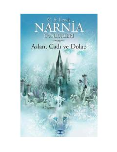

ACSehrli shkaf orqali Narnia o'lkasiga tushib qolgan bolalarning hayajonli sarguzashtlari.
Narnia Günlükleri seriyasining ushbu qismida to'rt nafar bola sehrli shkaf orqali Narnia o'lkasiga tushib qolishadi. Ular u yerda yovuz jodugar hukmronligiga qarshi kurashayotgan Aslan ismli sher bilan uchrashib, qish o'lkasini ozod qilish uchun sarguzashtlarga kirishadilar.